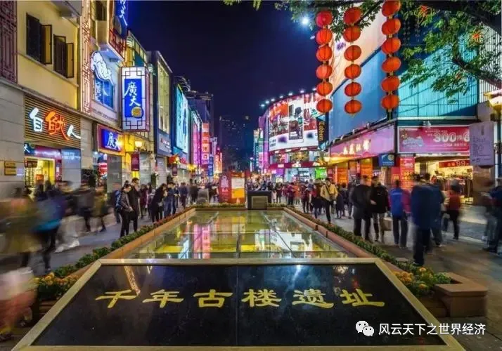
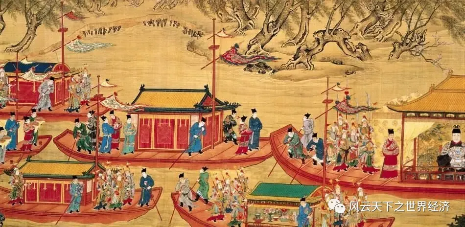
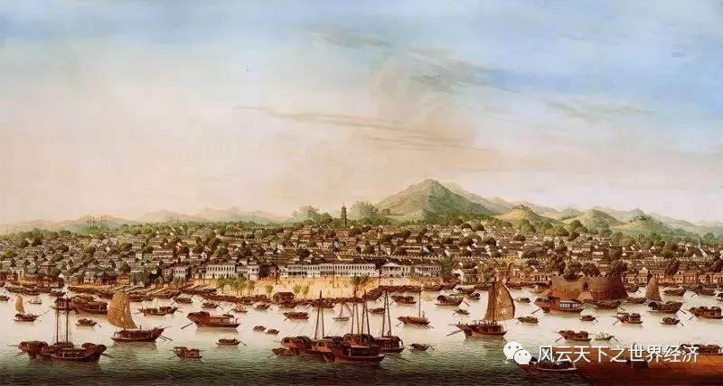
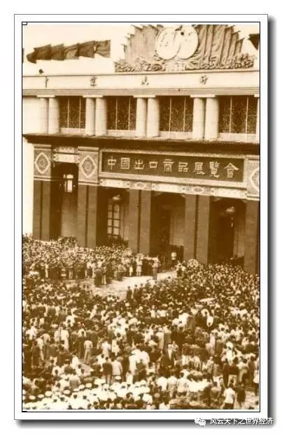

（中国）最大之港曰广府（Khanfu）,西国商业，以此为终点。 —— 阿拉伯人爱德利奚（Edrisi）《地理书》, 1153年
“江边鼓吹何喧阗，商行贾舶相往旋；珊瑚玳瑁倾都市，象齿文犀错绮筵；合浦明珠连乘照，日南火布经宵燃……”此诗出自明末天启年间韩上桂的《广州行呈方伯胡公》，此“方伯胡公”即为时任两广总督的胡应台。从这首诗里，一方面我们可以感受400年前古代广州商业所筑起的无边繁华，而更为重要的一个方面，是其中所隐含的官方对海外贸易的态度。

千年商都——广州
如果回溯的历史足够长的话，我们会发现中国从来就不是一个封闭保守的国度。唐太宗以天国强宗的旷世雄心，推行“招来遐域”的对外开放贸易政策，中华帝国由此进入一个空前的贸易开放时代。此时的广州，作为“中国海外贸易的第一大港和世界贸易的东方第一大港”，成为镶嵌在中国绵长海岸线上最耀眼的一颗明珠。开元二年（714年）左右，唐政府在广州设置中国历史上第一个专门的外贸管理机构——广州市舶使院，也就是后来的“广州市舶史”和“广州结好使”，如此重要的一项制度创新把广州推向中国对外贸易的最前沿。
当我们在一个更长的历史跨度上来审视广东作为海洋贸易重镇的地位时，我们不难发现：广东的崛起有着强烈的官方背景。当然，广东真正的机遇的到来，则是在几百年之后的明清时代。
Part1朝贡贸易中的崛起
明代是中国历史上的一个特殊节点，自明太祖始，那些中华帝王再无当年气吞万里、怀柔远人的气魄，帝国开始了它最为难堪的一次转身。在思想文化领域，理学开始逐渐占据主导地位，成为官方哲学。反映在外交上，则是“华夷之辨，守备为上”的思想开始成为政策的主流，由此也带来了对外贸易的态度的巨大转变。大约于洪武四年（1371年）前后，明朝政府开始了前所未见的海禁政策。海禁虽然源于军事上和政治上的滥觞，但是对于海外贸易的影响则是深远的。明朝海禁的内容除了在沿海地区建立卫所，加强海防之外，另一个途径就是通过法例条文严禁下海通商贸易。“仍禁海民不得私出海”、“人民无得擅出海，与外国互市”、“‘私自下海者’，充军”等等法令时常见诸政府的公文，贸易作为一种官方认可的商业活动基本上被废止了。

朝贡贸易
在海禁期间，贸易以一种极富中国特色的形式存在，那就是朝贡贸易，而商舶贸易则是被视为走私而严格禁止。在这种政府垄断性的贸易形式中，广州作为一个有千年历史的古港，其地理和政治上的优势逐渐得以发挥。朝贡贸易中外国商人向明朝政府“进贡”，以充分体现大国的尊严。明朝政府根据国家的不同，规定其“进贡”一年一次，或是三年一次，有的甚至八年一次。首先，载有番货的船只会在澳门停泊，经市舶司查验后，得以驶入广州，番商被指定在怀远驿居住。贡使在市舶官员的陪同下押解贡品进京，进献皇帝，由皇帝回赠贵重物品取道广州回国。在这个过程中，随贡船而来的商人可以在怀远驿交易，并交纳关税。广州就是在这种特殊的贸易形式中，逐渐确立了其在中国对外口岸中独一无二的地位，并开始汲取垄断贸易中的巨额红利。
Part2天选之地，制度之利
广州为什么能够在众多的中国古港中脱颖而出，抓住了历史的机遇而成为帝王的首选呢。这其中历史、政治和地理等诸多因素驳杂在一起，成全了广州在中国封建社会晚期绝无仅有的贸易地位。
首先，广州作为南中国的一个政治中心，有着相对连续的历史和对周边地区的强大辐射力。自秦始皇于公元前214年平定南越之后，“发诸尝通亡人、赘婿、贾人，略取陆梁地，为桂林、象郡、南海。”南海郡即覆盖今天广东的大部分地区，设郡治（首府）番禺县（广州）开始，除了元代隶属江浙行省之外，广州一直是岭南地区的一级行政单位。更为重要的是，在岭南地区的建立的“三南”政权，历时148年之久，均建都广州：南越国在原秦在岭南设置的桂林、象郡、南海三郡基础上建立，其南界一部分深入今越南清化、河静及义安省东部地区，赵佗攻破象郡安阳王，“令二使典主交趾九真二郡人”。在述及古代广州的贸易地位时，有一个君王的作用是不能被忽视的，那就是现在静静躺在南越王博物馆里的南越国第二代帝王赵眜，正是他顺应了汉武帝的招安政策，南越国并入大汉版图，才使得以岭南贸易得以维持；南汉国“东抵闽粤，西逮荆楚，北阻彭盆之波，南负沧溟之险”，大抵以今天两广区域为主，东到闽广交界，西控广西大部，南逾海南岛，北抵湖南彬州；南明政权也主要在广州活动。因此，即使是在战争混乱的年代，该政权为了竞争生存，对广州一带的经济(尤其是海外贸易)仍极为重视，强化了广州作为岭南经济中心的地位。
其次，政治经济的中心地位使得广州的基础设施和内外交通网络建设被积极重视，这大大拓宽了广州的辐射范围，为对外贸易的开展提供了良好的硬件支持。灵渠的修建，虽然最初只是为了解决对越作战问题，但是由于它沟通了长江水系和珠江水系，使得广州可以通过水路直达北方的政治和商业中心，在经济上发挥了重要作用。从秦汉起至隋唐，灵渠一直是沟通五岭南北地区经济文化交流的重要渠道，对广州作为南方的贸易中心的维系发挥了重要作用。自此以后，以广州为起点的陆上和水上交通建设一直在持续，到清光绪年间已经达到了“五岭之南，郡以十数，县以百数，幅员数千里，咸执秩拱稽受治于广州之长”的空前水平。

一口通商时的广州
再次，广州独特的地理决定它在对外贸易方面的先天优势。自明代之后，随着西方列强的崛起，中国的外交就已经转为守势，海防安全成为政府考虑的重点。1757年，乾隆皇帝下达了关于洋船只许在广东收泊不得再赴浙省的上谕，也就是从这一年开始，中国的对外贸易格局由多口通商变成了一口通商，偌大的清帝国只剩下广州一处口岸延续对西方的贸易，并垄断中国对外贸易达85年之久。广州何以成为政府的首选？这其中地理上的先天优势无疑起到了决定性的作用。不同于中国其他的港口，广州在远古时代是珠江的出海口，是一个典型的咸水港，经过长时间的河道淤积，港口一路外迁，才由海港演变成内河港口。而这个过程也塑造了广州港独特的地理风貌。乾隆在将四口通商改为一口通商的上谕中写道：虎门黄埔设有官兵，这比宁波外洋船只可以扬帆直至要安全的多。虎门海口是洋船进入广州的要塞，这里有金锁铜关的天险可守。并且虎门各处都筑有坚固的海防工事。另外，虎门内部的内河港口黄埔又是抵达广州的必经之路，从虎门至黄埔，河道复杂，没有中国领航员的带领，外洋商船难以自由出入，这比起宁波泉州这些古港辽阔的海面要安全的多。因此，广州作为大清帝国唯一的通商口岸只不过是税收利益向海防安全妥协的产物。
正是依靠这种垄断的力量，广州书写了一段辉煌的商业历史。这是末代王朝开向世界的唯一一扇窗，它一方面把中国的积累千年的物质和精神文明源源不断的输出到世界的每一个角落，同时也在有限的区域内吸纳着西欧来风，把一种来自西方的完全不一样的文明嫁接在老迈的帝国躯体上。这个时候，管理中国外贸的机构已经不是唐宋以来设立的市舶司，而是带有官方和民间双重性质的商业团体“三十六行”和“十三行”。垄断所获得收益是巨大的，清代文人屈大均的诗词充分描绘了极盛时期广州贸易的繁华：“洋船争出是官商，十字门开向二洋，五丝八丝广缎好，银钱堆满十三行。”
Part3“广交”天下货品
追古抚今，现在的广州的对外贸易已经和行政性垄断再无关联，市场化改革已经将广州的海外通商的故事彻底改写。但是广州的对外贸易传奇仍在延续，而它最为耀眼的标志则是和一场叫做广交会的商贸盛会有关。这个正式名称叫做中国出口商品交易会的会展能够落户广州，也体现了诸种机缘巧合，而它最初的二十年历史（1957-1978年），仍然带有强烈的官办性质，并垄断了中国的绝大部分对外出口。
冠以中国的出口商品交易会之所以选在远离政治中心的广州，偶然中似乎透着必然。新中国成立之初，百废待兴，为了筹集购买主要战略物资的外汇，1954年和1955年，华南物资交流大会在广州开办，由于毗邻香港澳门，内地物资很快被来自港澳华侨一抢而空。时任外贸部广州特派员的严亦峻注意到了这个细节，并萌生了将这个交易会固定下来，长期办下去的念头，最后经过周恩来总理的审批，1956年9月，以中国国际贸易促进会名义主办的“中国出口商品展览会”推出，这便是广交会的前身。1957年4月25日，中国出口商品交易会即广交会正式举办，此后开启了广州长达近三十年的独一无二的外贸地位。

第⼀届广交会在⼴州中苏友好⼤厦举行
今天，这个1957年从1开始跳动的数字已经来到了133，意味广交会已经步履如一地走过了整整67年。在这期间，中国的经济治理体制几经变迁，但是广交会却从未被废止，如时钟般可靠，把这座千年商都带到了制度性开放的新时代。它穿越了十年文革、SARS事件、新冠疫情……广州商贸文化的强大基因造就了中国外贸史上一个伟大奇迹。
以上便是广交会的前世今生。但是如果我们把广州的交易会放到一个更宏大久远的背景去考察，广州举办“交易会”的时间还可以再往前推进300年。尤其是广交会和300年前的广州交易会在某些细节上的惊人吻合，让我们不得不承认历史是有连续性的。葡萄牙学者施白帝的研究表明，早在嘉靖二十九年（1550年），盘踞澳门的葡萄牙人就和明政府达成协议，在广州举办半年一度的“交易会”，葡萄牙也藉此获得在中国人和日本人之间贸易的垄断权。万历八年（1580年）“交易会”确定为春秋两季，这一点与如今的广交会一致。将交易会安排到春秋两季主要是出于以下原因：首先，当时的商船动力性较差，往往需要借助季风来驱动航行。当时活跃在东南亚一带的葡萄牙商船每年秋冬间乘着东北季风，载着丝绸和瓷器等中国货物，抵达望加锡；次年春夏间，乘着西南季风，将檀香木等香料以及钻石等货物运回澳门，等待赴广州贸易；另一个原因是农产品和某些手工制品生产的季节性。如今的广交会虽然也是在春秋两季举办，但原因已不大相同，因为现在的货轮再无需季风的驱动，但是商品的季节性仍然是这种制度安排的重要缘由。
西方文献对于广州的“交易会”多有记述。葡萄牙史学家徐萨斯提到：“一个连续数月的集市首次在广州出现后，以后每年两次；一月份澳门商人开始购买发往马尼拉、印度和欧洲的商品；六月份则购买发往日本的商品，以便及时备好货物，使商船能够在西南和东北季风开始时按时起航”。季风在古代海运贸易中的作用举足轻重，因此东南亚地区也往往被西方商人称为“季风下的土地”（Lands below the winds）。
如今，很少有人再会去追溯广交会如此遥远的历史，但是，不能否认广州作为一个外贸城市它与这段过去的脉血相联。改革开放后，市场经济的推行使得广交会再无任何垄断色彩，它当年所承载的国家使命也逐渐消弭。有人担忧失去官办背景的广交会，会逐渐被侵蚀，甚至是取代，殊不知最古老的广州交易会即是源于民间，绝对是市场的产物。这是一个来自于市场的自发存在，如今重归于市场，经得起历史长河的淘洗。
因为，所有的历史都是连续的，当改革的春潮再起，广州的开放基因注定会被再次唤醒，并书写出广州海外商贸篇章中华美绝伦的另一页。